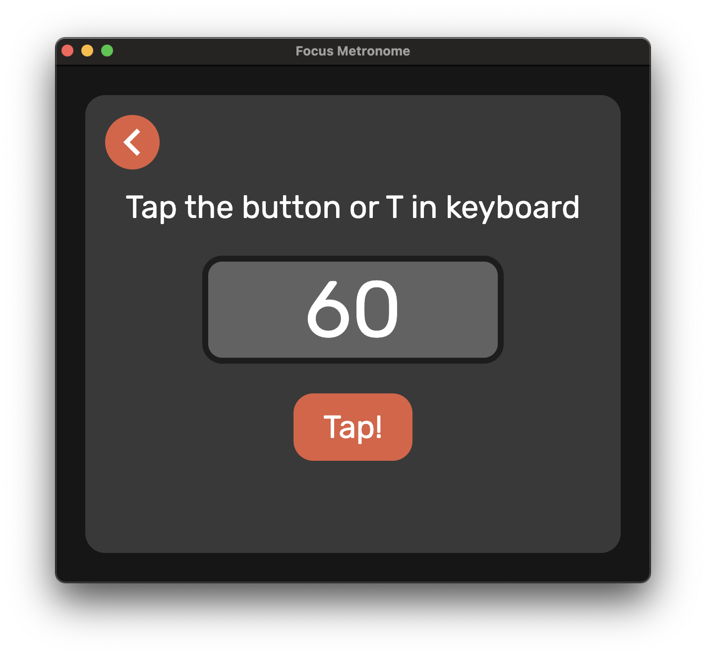
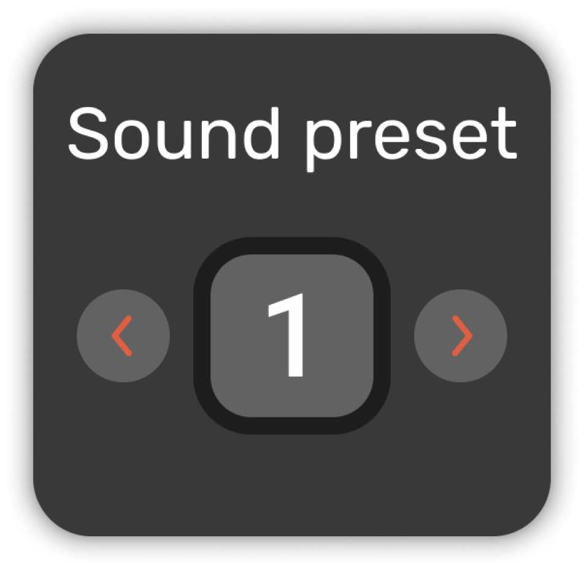
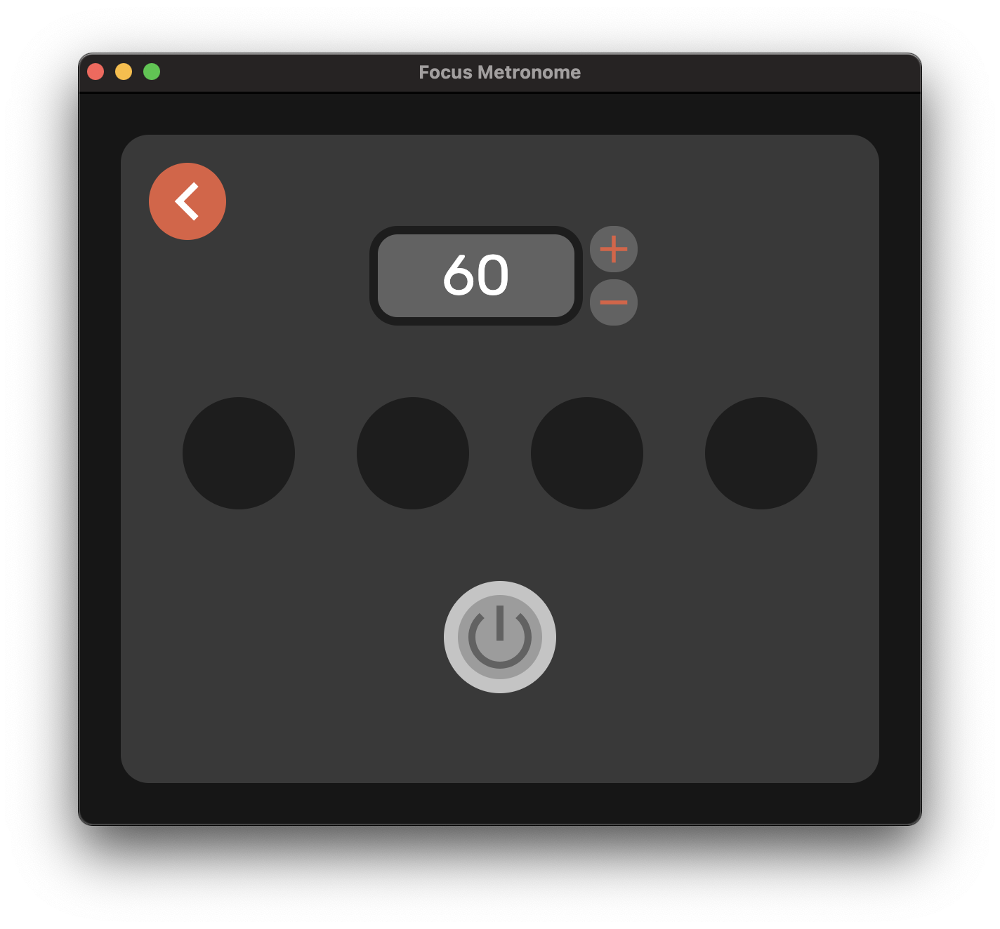
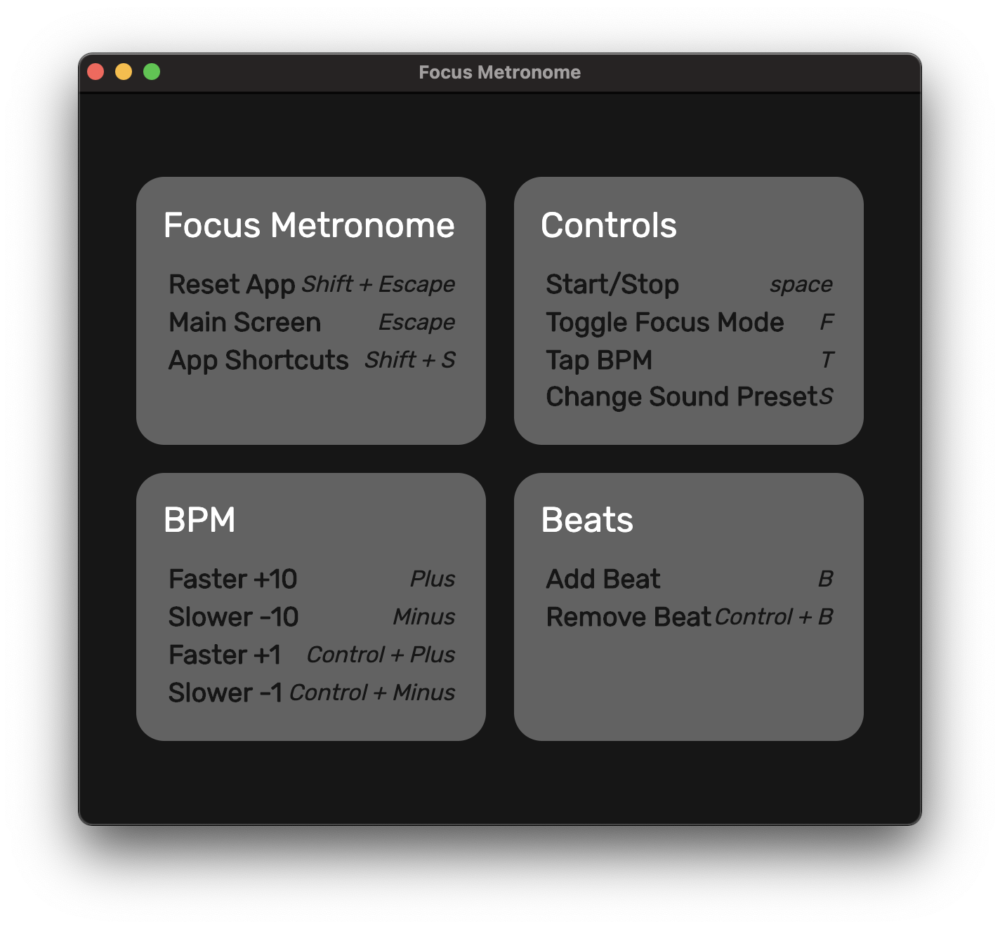

Features
Adjustable Bpm, adjustable Beats & Notes

Tap your tempo, have it converted to bpm for you
Multiple Sound Presets for the best practice ambience
Focus mode, less interface, more focus
Use keyboard shortcuts for ease of use
Want more amazing features, please submit an issue or send yourself a pull request to our repository on GitHub.
This is a Free Software, enjoy!